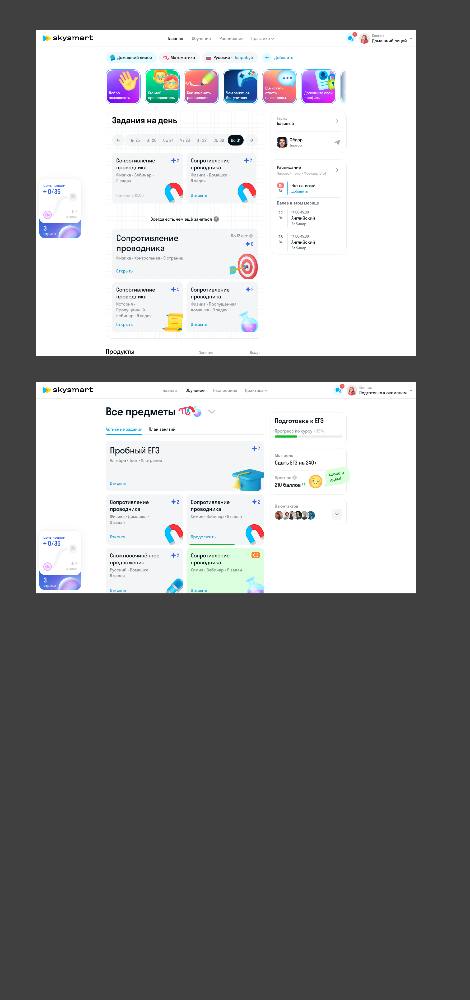
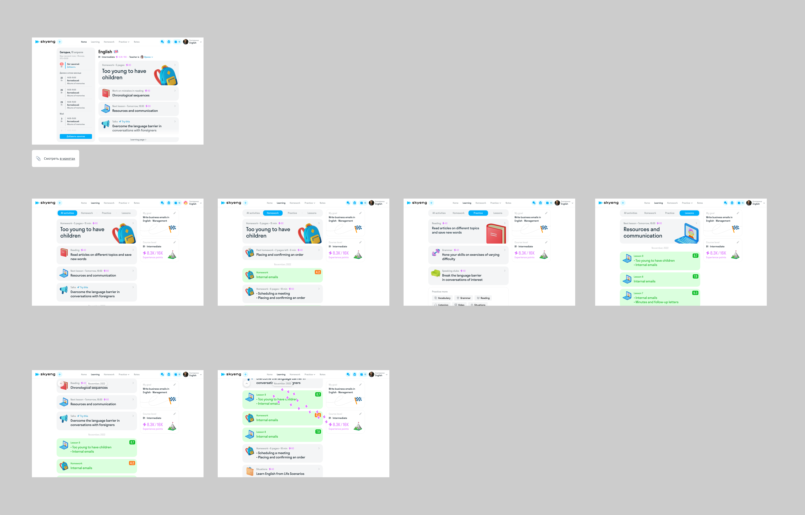
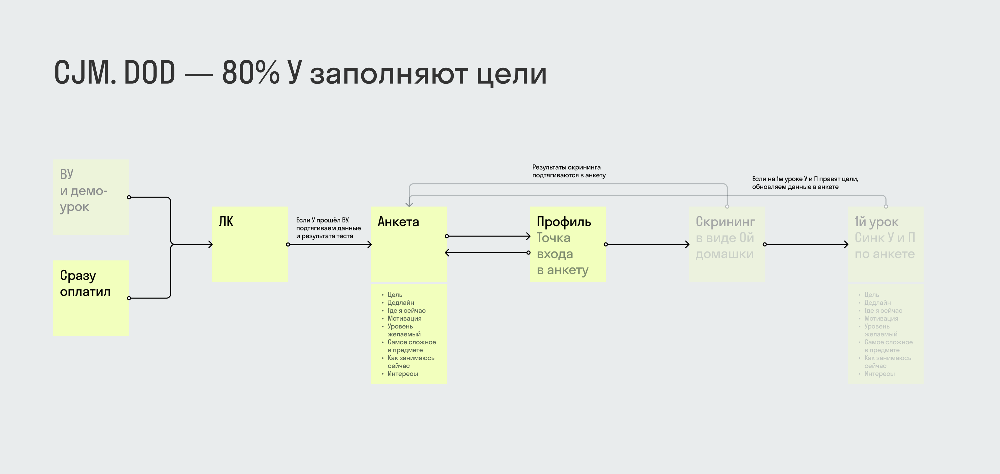
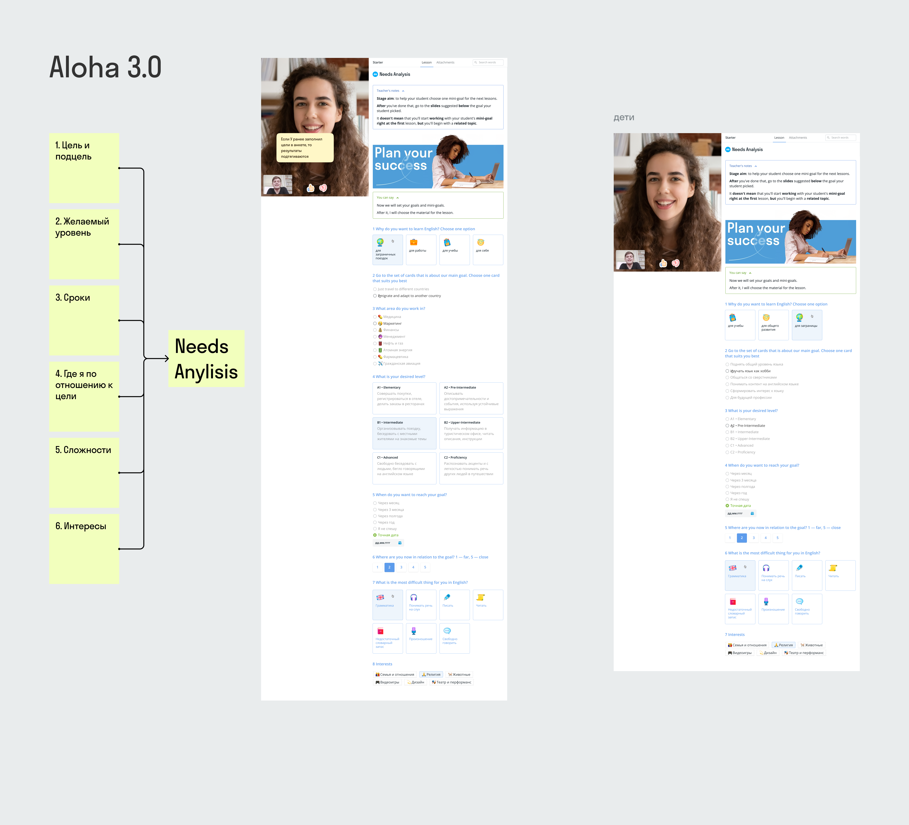

Context
Skysmart is the K-12 product of Skyeng, Russia's largest online school. English, math, Russian language, exam preparation. Three learning formats: one-on-one tutoring (F2F), group sessions (F2G), and self-paced exercises.
Students range from age 4 to 18. Younger ones need large elements, mascots, and game mechanics. Older ones need a serious tone, complex navigation, and exam preparation tools. One product, but an entirely different experience for each age group.
The core problem: kids learn online and need motivation. Teachers start lessons without context — they don't know the student's goals, level, or struggles. Progress isn't visualized anywhere, and goals from the application form never reach the product.
My role
Product designer on the Learning Experience team. Four parallel workstreams:
- Student dashboard — home screen, schedule, tasks, subject navigation
- Goal setting — level diagnostics, surveys, syncing goals between student and teacher
- Progress — health system, learning metrics, achievements, quests
- 3D course map — visual learning path with level badges
Over 20 Figma files. Every feature — desktop and mobile. Every feature — through stages: draft, WIP, development, production, archive. UX research built into the process: prototypes tested with real students and teachers.
Student dashboard
The main page after login. Daily tasks, schedule, next lesson, subject switching. Round subject icons, each with its own 3D illustration.
Three dashboard variants for different learning models. In F2F — schedule and tutor contact in focus. In F2G — session schedule and group feedback. In Skysmart — tasks, exercises, course progress.
Plus: subscription tiers, to-do lists, mock exam tabs, contact widget, webinar schedule, story cards with promo content. Every element — desktop and mobile.

Iterations
The dashboard went through several versions. Everything changed: navigation structure (chronology, scenario, taxonomy), progress display (percentage, categories, timeline), lesson card layout.
Each version answered a specific question. Chronology — does the student understand the sequence? Scenario — can they see what to do today? Categories — can they find the right section? The final version combined the best of each approach.

Goal setting
A system that connects student motivation to course content. Before it: goals from the landing page application never reached the product, teachers didn't know why the student was learning, and in automated scenarios all context was lost.
CJM with a clear metric: DOD — 80% of students fill in their goals. Two funnel entry points: through a demo lesson with a methodologist or directly after payment. The path: dashboard → survey → profile → screening as homework zero → first lesson.
An eight-field survey: goal, deadline, current position, motivation, desired level, hardest part of the subject, current study habits, interests. Screening results feed back into the survey. If the student edits goals during the first lesson — data updates automatically.

First lesson
Aloha 3.0 — a separate design project within goal setting. Needs analysis: six questions (goal and sub-goal, desired level, timeline, position relative to goal, difficulties, interests) become a plan for the first lesson.
The teacher sees the student's answers before the lesson starts and builds the session around their goals. If the student didn't fill the survey in the dashboard — they get a Telegram push, an SMS with a link, and can complete everything right in the chat.
Diagnostics adapt to the subject. For Kids English — playful questions with illustrations. For Math — level assessment tasks. For Adult English — self-evaluation with 40+ goals (travel, work, exams, hobbies) and 50+ interests to choose from.

Progress and gamification
Not just "completed 5 of 20 lessons." A health system — a composite assessment across five skills: reading, listening, grammar, speaking, writing. Each skill with a percentage and trend. The teacher sees the same picture from their side and gets content recommendations.
For kids — quests with timers and rewards. "Solve 2 math cards" — done, earn stars. Stars accumulate toward rewards: puzzle printouts, coloring pages, diplomas, game access. Gamification informed by competitor research: Duolingo (streaks, leagues), LinguaLeo (lion hunger, meatballs), Busuu (XP), Foxford (achievements with levels I–V).
The goal widget in the dashboard cycles through states: no goal set, survey partially completed, goal selected, new activities on the course map. Each state — a separate design with CTA and feedback.
3D world
Skysmart is not just a learning platform — it's a world for kids. Three 3D mascots accompany students through the interface. Each has its own personality and pose set for different states: success, error, waiting, congratulations.

The course map visualizes the learning path through a 3D badge system. Levels from A1 to C2 — each with its own visual style. Starter levels are simple orange hexagons. Mid-tier levels gain wings. Top levels are gold with a crown. Locked levels appear gray — as a landmark and motivation.

Visual system
Beyond mascots and badges — a set of 3D objects for rewards and emotional states: a book, flask, camera, planet, sunglasses, a cake with a graduation cap. Each object rendered in a unified style and used in achievement cards and quests.

A separate sticker pack inspired by Alice in Wonderland — for learning engagement. Magic mirror, pocket watch, magic mushroom, the Mad Hatter's cake. Stickers appear as rewards for completing quests.